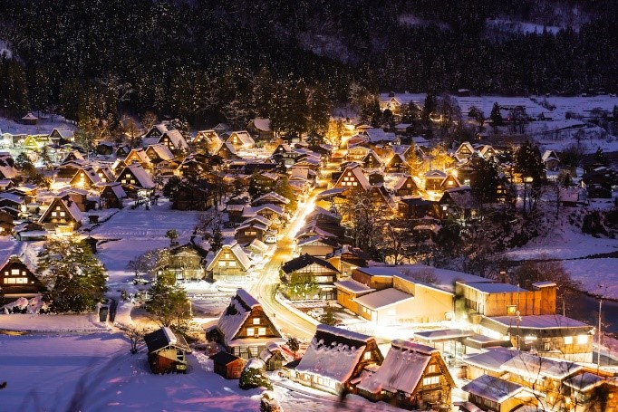
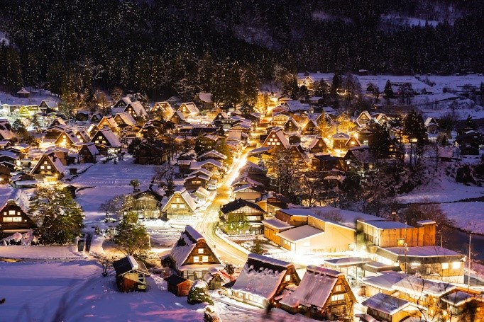

Làng lịch sử Shirakawa-go và Gokayama
 

• Một Di sản thế giới được UNESCO công nhận tại Nhật Bản. Tài sản văn hóa bao gồm ba ngôi làng miền núi lịch sử có tổng diện tích 68 hécta (170 mẫu Anh) trong thung lũng sông Shogawa xa xôi, trải dài qua ranh giới của hai tỉnh Gifu và Toyama ở miền trung Nhật Bản. Shirakawa-gō ("Bạch Xuyên Hương", nghĩa là "làng của con sông trắng") nằm tại Shirakawa thuộc tỉnh Gifu. Gokayama ("Ngũ Cá Sơn", nghĩa là "năm ngọn núi") được phân chia thành các làng Kamitaira và Taira ở Nanto, thuộc tỉnh Toyama.
• Thung lũng nằm trong một vùng núi có tuyết rơi đáng kể và những ngôi làng này nổi tiếng với các nhà nông trại, được xây dựng theo phong cách kiến trúc được gọi là Gasshō-zukuri ("Hợp Chưởng Tạo"), được thiết kế để dễ dàng tuyết rơi xuống từ mái nhà của họ.
• Ở làng cổ Shirakawa, vào mùa đông có sự kiện Winter Light-up. Khi đó, cả ngôi làng sẽ được thắp sáng vào 6 đêm trong 3 tuần (mỗi tuần 2 đêm). Các khu vực được light up là vùng phụ cận của các ngôi nhà Wada house, Myozenji, Kanmachi, Shita-gozo, vùng phía Tây. Mỗi năm, làng Shirakawa-go chỉ lên đèn 6 lần nên mặc cho thời tiết giá lạnh, hàng nghìn du khách vẫn đổ về đây để chiêm ngưỡng cảnh tượng đặc biệt này.